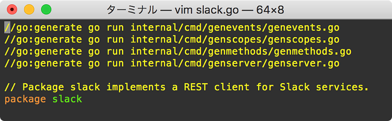
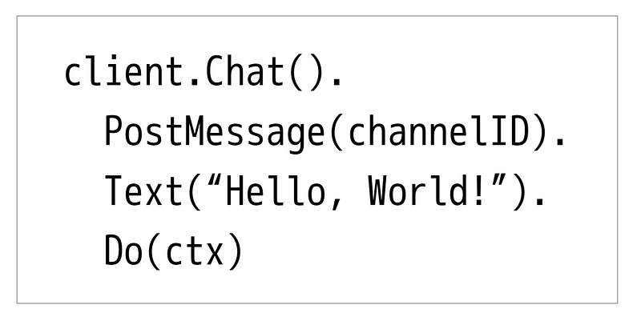
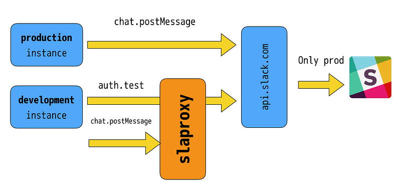

Generating Go Code For Slack
Generating Go Code For Slack
Back when I first wanted to write a Go application that talks to Slack, there was github.com/nlopes/slack . Back then this library had a couple of problems including the fact that there was no way to specify an HTTP Client (which means you couldn’t use it under Google App Engine which forces you to use the gooogle.golang.org/appengine/urlfetch package to make outbound connections), and it also didn’t have a way to work with context.Context.
After a couple of pull requests to the above library to see what I could do, I decided that what I wanted was a major API change: That means breakage, and it wasn’t really my wish to cause havoc to other users just to scratch my itch. So I decided to fork it to github.com/lestrrat-go/slack.
The Early Days
I started this project around April 2017, and immediately it proved to be a very painful (albeit simple in its nature) task. Taking each of the many Slack API endpoints, finding the necessary parameters, translating them into go, testing them… This was tedious, and very error prone task.
Every API call in slack is basically the same:
- You build your request
- You send your request
- You parse the response
However, having to figure out the list of parameters (and thus the API) for each API endpoint, designing it properly… doing this manually sometimes generated code that sometimes forget to place the parameters in a consistent order, sometimes the parameter list was so huge it was hard to create a sane method signature… it was rather a mess.
It took me about 2 weeks of doing this work for me say “I’m not doing this anymore: I’m automating it”
Enter Code Generation
Before plunging into code generation head on, first I made sure I knew what were the common parts that each API method shared, while I was still doing things manually.
After the dust settled somewhat, on around end of April 2017, I started whipping out simple command line “scripts” in Go under internal/cmd/* . These commands were placed here because the casual user should not need to see them in godoc or the like, but it should at the same time be controlled in the same repository.
These commands were then hooked to go generate.

The commands are nothing more than some simple tools to read some type of source such as a JSON file, and spit out formatted Go code to appropriate files.
For the client methods that talk to Slack, I created a file called endpoints.json . This file contained a list of all methods that we currently support, along with their request parameters and return values. The genmethods command reads this and spews out Go code which is nicely formatted by format.Source function before being written to appropriate files.
API Organization
Now that we are generating code instead of manually writing it, it’s time to change the API into an automation-friendly one. For this, I chose to follow the code style used in Google Cloud Platform’s Go API binding.
The details are somewhat more complicated, but here’s a very simplistic overview of this API:
Clientis the object that the user needs to instantiate, which handles common/global procedures, such as auth(n|z) and setting a base URL for the endpointsClientobject contains one or moreServiceobjects.Serviceobjects are logical groupings of the leaf methods.Serviceobjects can createCallobjects.Callobjects represent a particular API endpoint, and knows about details to make API calls and parse response objects. The API endpoints request is NOT fired until aDomethod is invoked on thisCallobject.- When
Callobjects are created, they are instantiated with mandatory parameters. Optional parameters may be passed via method calls, which all return the receiver object (so method chaining is possible). - When
Dois called on theCallobjects, the object assembles the necessary bits to construct an HTTP request. It makes the request, parses the response, and hands back the caller the results.
When I first saw the APIs under google.golang.org/api I was actually pretty weirded out by the design. I had never seen Go API like this elsewhere, but after learning how to navigate through its documentation and code, it made perfect sense because everything was so predictable.
For large REST/RPC method sets, this predictability and standardization made a world’s difference. So I chose to adopt it for my new library.

Speaking of Google-ish API, this library also adopted the Options pattern to specify optional parameters at construction time (See “Optional Parameters” in this article)
Generating a Server
After I started writing apps using github.com/lestrrat/go-slack, I noticed at one point that there was a problem: When I deployed multiple instances of the same app, if I don’t create a new Slack application for it and properly configure it, multiple messages may be sent to the team Slack, which is needless to say, extremely annoying.
Of course, one way to mitigate this is to properly configure each application. But if every developer had a sandbox to play, do you really want them each to have to configure their app…?
At this point I just thought: why don’t I just create a proxy that intercepts all API methods marked as having side-effects (such as posting a chat message), while passing through everything else to the real server?
Of course, this is annoying if we had to do it by hand. But since I was already generating client methods, it was fairly simple to create a tool to generate an entire server.

Now it was trivial to configure deployments to refer to the real Slack endpoint while development versions are directed to the above proxy.
Current Status
The library is pretty stable at this point, except that it does not implement the entire Slack API method set. I keep track of what’s there and what’s missing in this issue. Because everything is auto-generated, it is extremely easy to add new API endpoints.
List of currently unimplemented REST methods. They are only unimplemented because the author had no immediate need for…github.com
The server component should be considered alpha, but it currently works. If you have features that you would like to see, please let me know.
And finally, RTM isn’t that well defined, as I don’t use it much. I also welcome input on this area, please file an issue or PR.
Overall, I think this library could be very beneficial if you prefer consistency and predictability in the API. I’d love to hear your opinion.